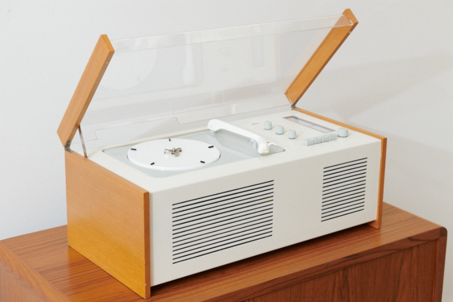
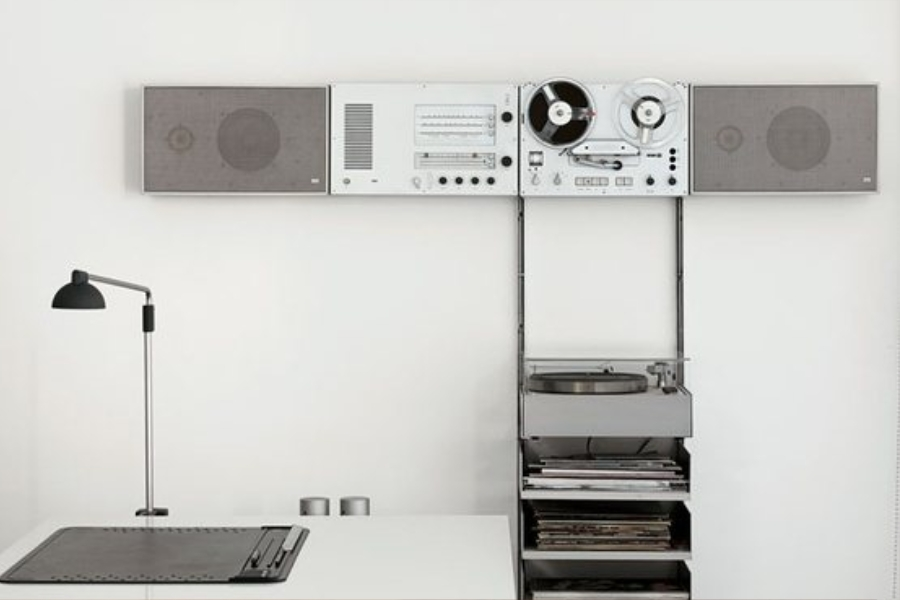
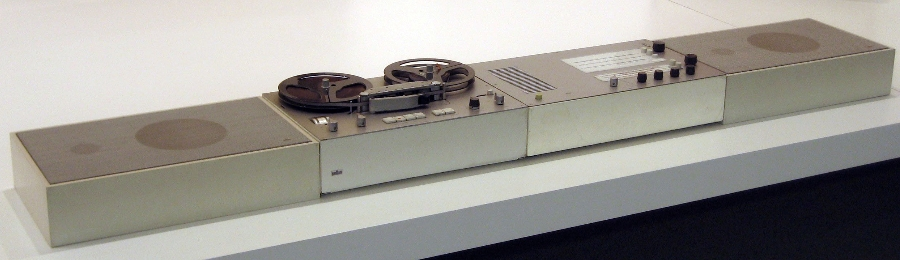

Дитер Рамс (нем. Dieter Rams; 20 мая 1932, Висбаден, Гессен) — немецкий промышленный дизайнер, в 1962—1995 годах ведущий дизайнер фирмы Braun, представитель минимализма в промышленном дизайне.
С 1947 по 1953 год Рамс изучал архитектуру и дизайн интерьеров в художественной школе в Висбадене с перерывом на практику в столярной мастерской в Келькхайме (1948—1951). После окончания практики Дитер продолжил обучение и в 1953 году окончил школу с отличием. С 1953 по 1955 год работал под руководством известного архитектора Отто Апеля, участвуя в разработке проектов американских консульств в Западной Германии. В 1955 году, пройдя по конкурсу, попал в коллектив дизайнеров фирмы Braun. В 1962 году возглавил дизайнерский отдел фирмы и оставался на этом посту до 1995 года.
Работа в Braun
В 1954 году братья Браун обратились к преподавателям недавно созданной школы дизайна в Ульме и наняли группу проектировщиков, в составе которой работал Дитер Рамс. На начальном этапе работы в Braun Рамс проектировал архитектурное оформление различных выставочных комплексов и офисов, но со временем все чаще интересовался промышленным дизайном.

Магнитофон SK4
В 1956 году он работал с преподавателем из Ульма Хансом Гугелотом над проектированием радиопроигрывателя SK 4, вобравшего в себя множество инновационных решений. Так, в SK 4 традиционный деревянный шкаф впервые был заменен на металлический корпус, а панель управления находилась рядом со звукоснимающим устройством.Первоначально крышка проигрывателя должна была изготавливаться из металла, но результаты тестирования выявили сильную звуковую вибрацию.Рамс предложил в качестве решения изготавливать крышку из прозрачного пластика, что впоследствии стало промышленным стандартом для устройств подобного типа, а сам SK 4 получил прозвище «Гроб Белоснежки».
«Продукт покупается для использования. Он должен удовлетворять определенным критериям, не только функциональным, но также психологическим и эстетическим. Хороший дизайн подчеркивает полезность продукта, в то же время игнорируя все, что может его отвлечь»
В след за этим Рамс и Гугелот разработали для SK 4 подключаемые звуковые динамики. Прежде звуковые проигрыватели выпускались с динамиками, интегрированными в корпус. Рамс предложил отделить динамики, сделав проигрыватель более компактным и функциональным.


Аудиосистема Braun
Технические характеристики
Габариты
Совместимость
Год выпуска
420x165x280
audio 1/2/350
TS45 1965
К 1963 году Рамс усовершенствовал кодификацию дизайна Braun с точки зрения структуры и цвета. Подход состоял в том, чтобы создавать совместимые компоненты одной системы (динамики, ресивер), позволяя пользователю принимать различные решения при компоновке устройств. Важным нововведением стала цветовая кодировка элементов управления. Кнопки на устройствах были бледными или темно-серыми, за исключением зелёного включения/выключения. Придерживаясь этих цветовых условностей Рамс обеспечил пользователям быстрое и эффективное ориентирование с новыми бытовыми приборами независимо от внедренных технических инноваций. Обилие удачных нововведений привело к тому, что в середине 60-х стиль Braun начал считаться символом современности и прогресса. Среди потребителей продуктов компании отметился британский поп-художник Ричард Гамильтон, который обыграл логотип Braun в своих работах.
Десять принципов дизайна
За годы своей работы Дитер Рамс сформулировал десять принципов качественного дизайна:
Хороший дизайн — инновационный
Хороший дизайн делает продукт полезным
Хороший дизайн — эстетичен
Хороший дизайн помогает продукту быть понятным
Хороший дизайн — ненавязчив
Хороший дизайн — честен
Хороший дизайн — долговечен
Хороший дизайн продуман до мельчайших деталей
Хороший дизайн гармонирует с окружающей средой и экологичен